Clearing
1 platformTidy up the sofa_platform_0.
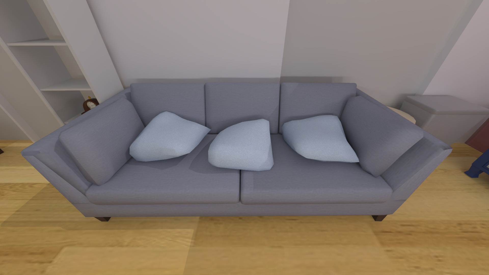
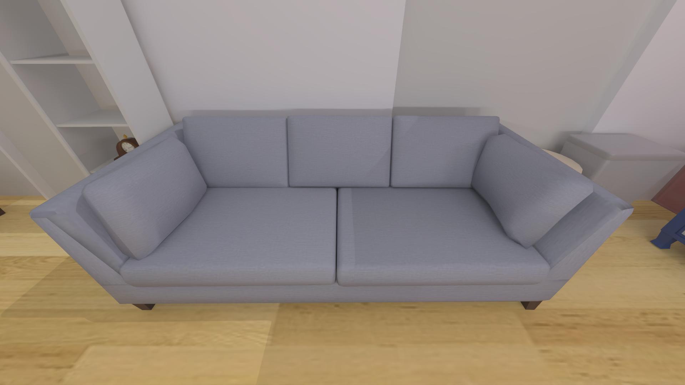
ManiTaskGen: A Comprehensive Task Generator for Benchmarking and Improving Vision-Language Agents on Embodied Decision-Making
University of California San Diego, USA
*Equal contribution
Overview
ManiTaskGen automatically generates diverse, scene-grounded mobile manipulation tasks, from specific object relocations to abstract goals such as clearing a table. These tasks support systematic benchmarking and feedback-based improvement of embodied decision-making agents.
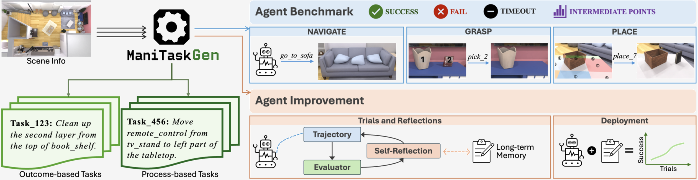
Task Generation Pipeline
Pipeline Overview
Starting from scene information, ManiTaskGen builds a receptacle-aware 3D scene graph and generates two complementary task types: process-based instructions that specify actions, and outcome-based instructions that specify desired scene states.
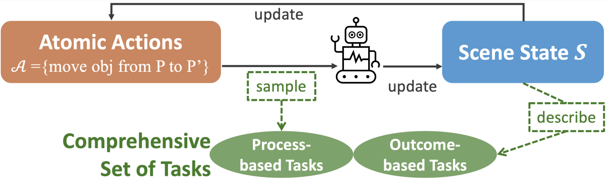
Step 1: Construct Receptacle-Aware 3D Scene Graph
Our scene graph represents both objects and the available placement regions around them. By recording support relations, spatial relations, and free space, it provides a structured basis for generating object relocation tasks.
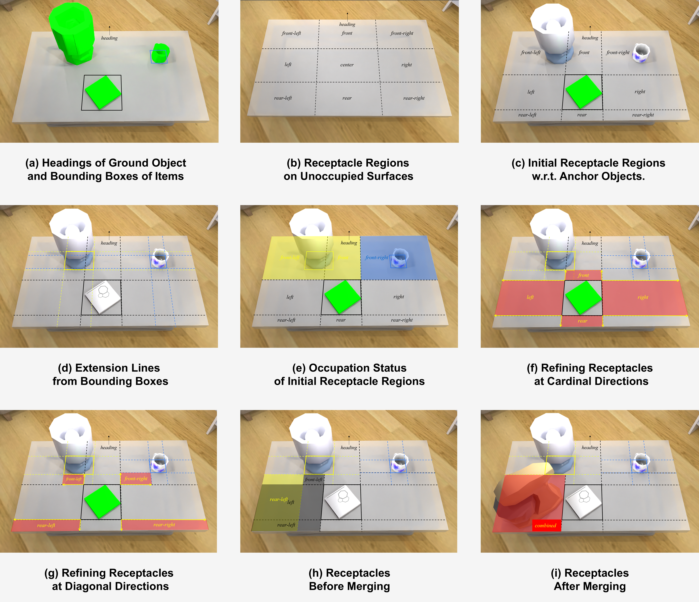
Step 2: Generate Process- and Outcome-based Tasks
Process-based Tasks
Process-based tasks specify actions and their order. We sample object relocations from the scene graph and compose them into instructions with different spatial constraints and sequence lengths.
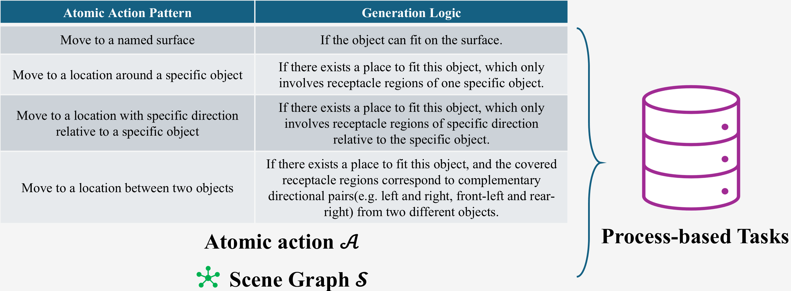
Outcome-based Tasks
Outcome-based tasks describe desired scene states, from clearing a surface to organizing a workspace. We instantiate 200 human-derived task templates with scene objects and use VLM voting to filter for feasibility.
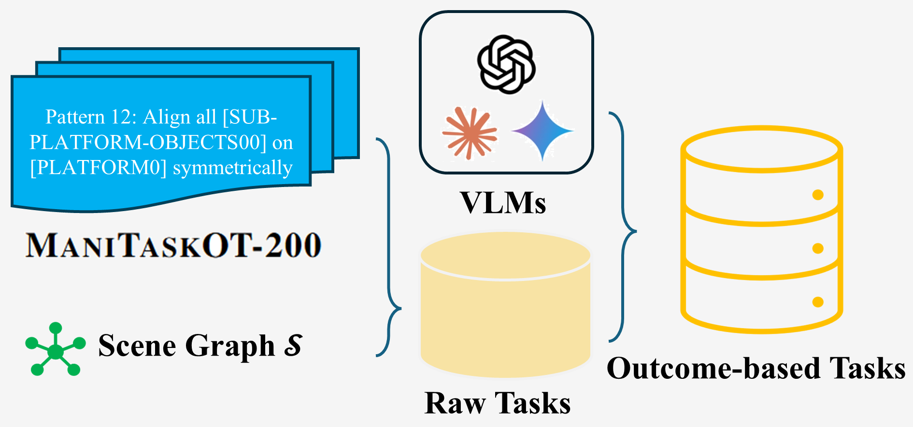
Tidy up the sofa_platform_0.


Arrange objects on wooden_table_platform_0 by height and type.
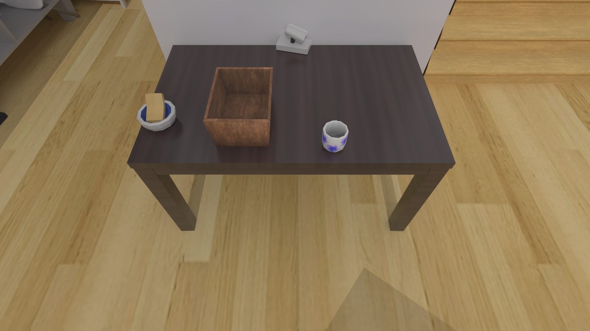
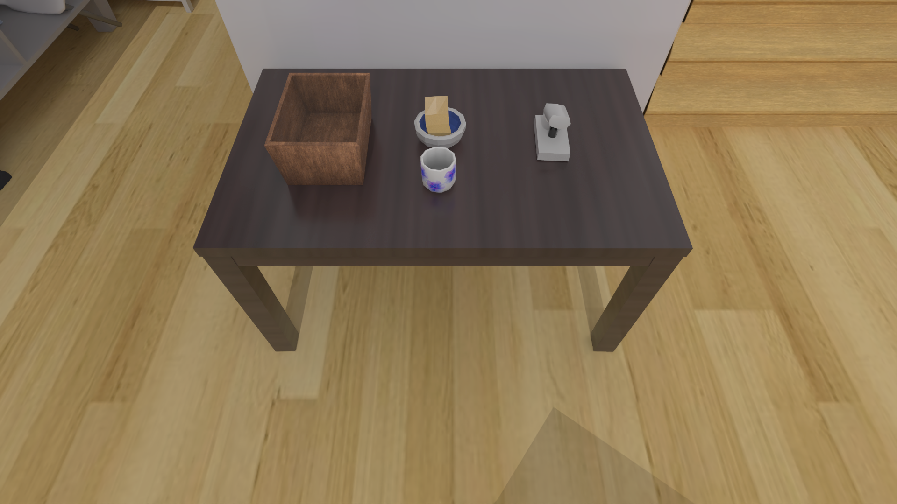
Transform the top of white_table_platform_0 into a "cityscape" by arranging objects to resemble buildings and roads.
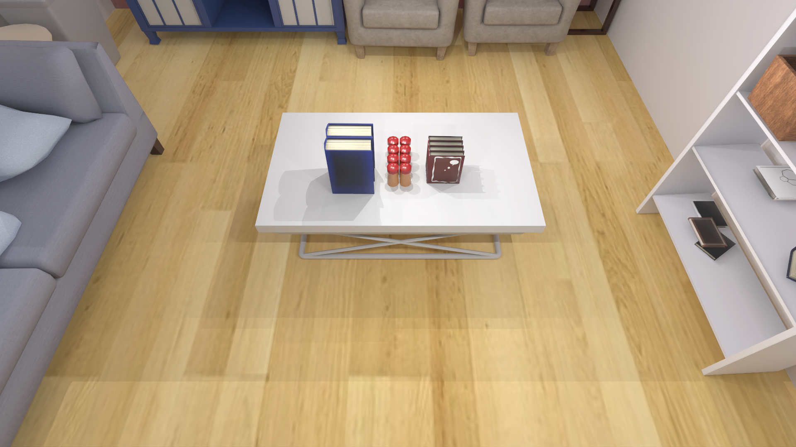
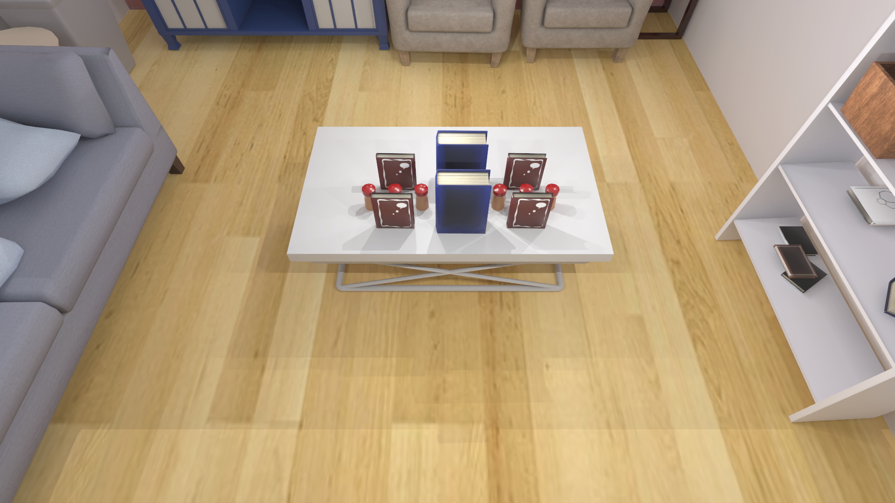
Remove all objects from kitchen_counter_platform_1 and organize them into distinct categories, placing related items together on tvstand_1.
kitchen_counter_platform_1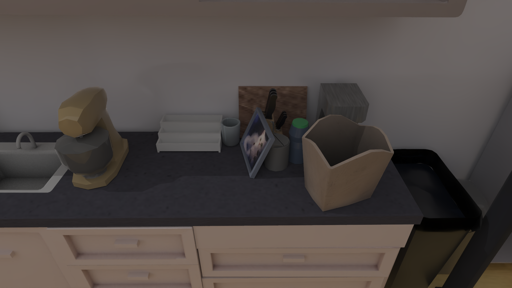
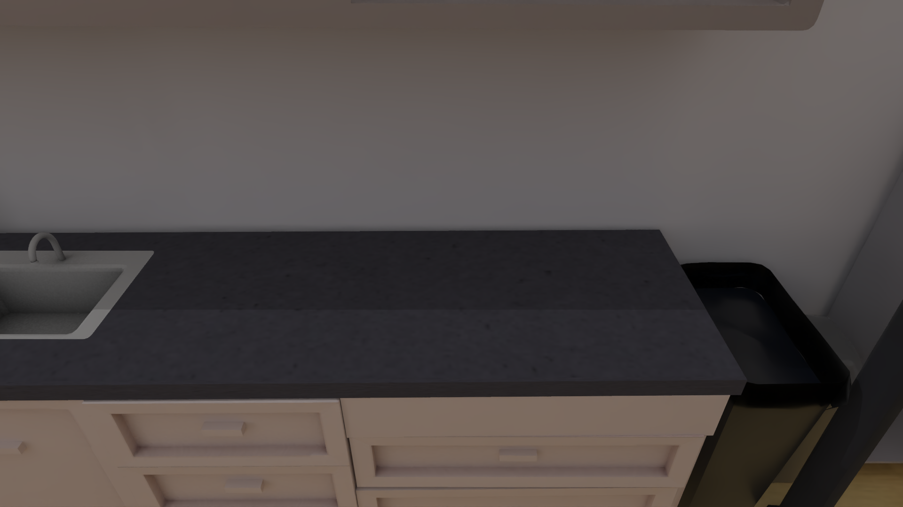
tvstand_1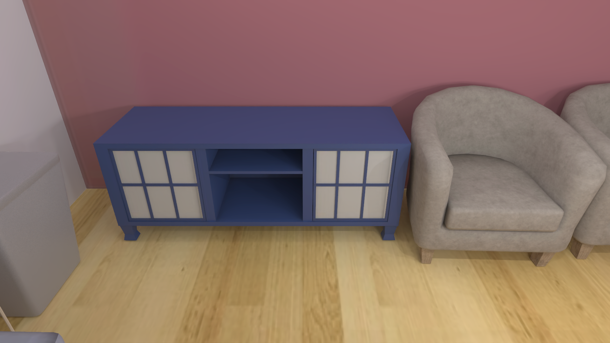
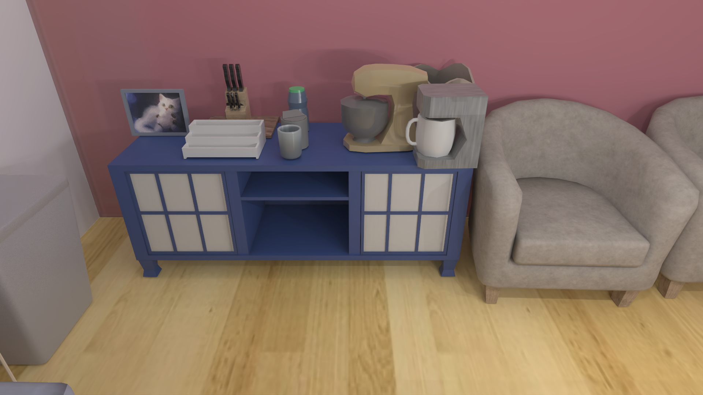
Each lightmap visualizes 100 sampled tasks from the same scene, with highlights marking referenced objects and locations. Compared with the GPT-based baseline, ManiTaskGen distributes tasks more broadly across the scene.
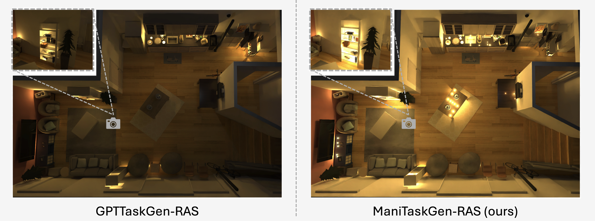
Task Quality
Human verification finds 94.0% of process-based tasks and 86.5% of outcome-based tasks valid. In a separate single-scene comparison, ManiTaskGen also achieves broader coverage of source and target platforms than the GPT-based baselines.
ManiTaskGen Applications
Benchmarking VLM Agents on Embodied Decision-Making
Agent Action Space
We evaluate high-level embodied decision-making through a grounded skill interface. At each step, the agent receives visual observations and selects an action to navigate, change viewpoint, pick, inspect placement regions, place, or end the episode.
Goto
Change View
Pick
Show Receptacle
Place_r
Place_s
Task Difficulty and Evaluation Criteria
Levels 1–3 test single-step relocation with unique targets, object disambiguation, and two-step task completion; Level 4 tests outcome-based goals. Process-based tasks receive automatic success checks and intermediate scores, while outcome-based results are primarily evaluated by humans.
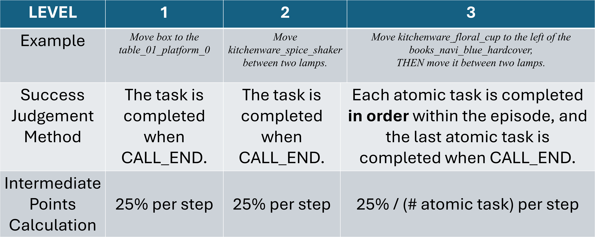
Episode Examples
Follow an agent from the initial task instruction to the final scene. The video illustrates how observations, actions, and environment updates form a complete evaluation episode.
Explore successful and failed episodes below, including the full observations, selected actions, and final task judgments.
Move kitchenware_white_paper_towel_holder between lighting_blue_base_table_lamp and lighting_blue_base_table_lamp
(Success Episode by Claude-3.7-sonnet)
Move Remote to Bowl's rear-left receptacles
(Failed Episode by Gemini-2.5-pro)
You are a household assistant robot equipped with a vision system and manipulation capabilities. You need to complete a task in a 3D environment, mainly involving moving, picking up, and placing objects. Your goal is to move an object from one place to another correctly according to instructions. Please strictly follow the given Action Space for operations.
At the beginning of each task, you will be informed of a specific task to complete. Throughout the task execution, you will transition between multiple states and have access to a set of possible actions (action space).
You may receive one of the following task types involving one object and another object or a platform. ({an object/another object/a platform} are the name of objects or platforms, {dir} is one of the 8 directions):
Understanding directions:
Directions like 'front', 'rear', 'left', and 'right' are defined relative to the robot's perspective and the heading of the object or platform you are interacting with. The heading of a ground object is not fixed and depends on where the robot is standing and facing.
Empty Surfaces (Platforms): When interacting with an empty platform, imagine it divided into a 3x3 grid. The direction aligned with the heading (also, the FARTHEST middle space to you, NOT THE NEAREST MIDDLE SPACE) is labeled "front," with the remaining regions proceeding counterclockwise as "front-left," "left," "rear-left," "rear," "rear-right," "right," and "front-right." The grid is conceptually numbered as follows, based on these directions:
[front-left, front, front-right],
[left, center, right],
[rear-left, rear, rear-right]
Occupied Surfaces (Objects on Platforms): For objects on platforms, imagine extending the edges of the object's bounding box to the platform's boundaries. The resulting regions define the object's 8 receptacles, and the direction is defined similarly.
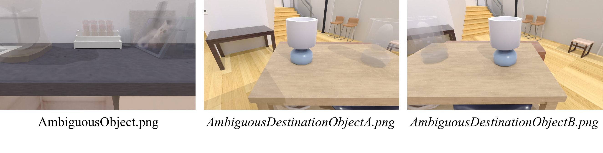
The task involves identical objects. To help you distinguish them, we have provided images of the relevant objects.
Current task:
Move kitchenware_white_paper_towel_holder between lighting_blue_base_table_lamp and lighting_blue_base_table_lamp
Initially, kitchenware_white_paper_towel_holder is on object_kitchen_counter_1_body_platform_1, and lighting_blue_base_table_lamp is on object_table_02_40_platform_2, together with lighting_blue_base_table_lamp.
Steps used: 0/20. You can only take at most 20 steps, so hurry if you've almost used all of them!
Your available action space:
VLM Response: go_to_object_kitchen_counter_1_body_platform_1
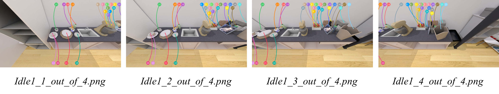
You are currently at object_kitchen_counter_1_body_platform_1.
And you are holding nothing.
Steps used: 1/20. You can only take at most 20 steps, so hurry if you've almost used all of them!
Your available action space:
Here are 4 images, named ['Idle_1_1_out_of_4.png', 'Idle_1_2_out_of_4.png', 'Idle_1_3_out_of_4.png', 'Idle_1_4_out_of_4.png'] respectively.
Their description is as follows: These images show the platform you are currently on in one view, with regions or objects marked with numbers for you to place objects accurately. The platform is object_kitchen_counter_1_body_platform_1.
If the platform has no objects, a 3x3 grid will be marked on the platform to help you place objects, with each grid marked in numbers from 1 to 9. If there are objects on the platform, guiding lines will indicate the object numbers. Note that if you see multiple images, it means the platform is too long to be captured in one image, and it's guaranteed that the same object will marked in THE SAME COLOR GUIDELINES AND THE SAME NUMBER. If you think you can't determine the number of an item in one picture, you can go through other pictures and see if this item is marked more clearly.
VLM Response: change_view
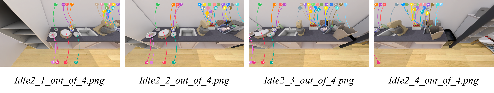
Unable to rotate to another view. The platform you at only have 1 walkable place for you.
You are currently at object_kitchen_counter_1_body_platform_1.
And you are holding nothing.
Steps used: 2/20. You can only take at most 20 steps, so hurry if you've almost used all of them!
Your available action space:
Here are 4 images, named ['Idle_2_1_out_of_4.png', 'Idle_2_2_out_of_4.png', 'Idle_2_3_out_of_4.png', 'Idle_2_4_out_of_4.png'] respectively.
Their description is as follows: These images show the platform you are currently on in one view, with regions or objects marked with numbers for you to place objects accurately. The platform is object_kitchen_counter_1_body_platform_1.
If the platform has no objects, a 3x3 grid will be marked on the platform to help you place objects, with each grid marked in numbers from 1 to 9. If there are objects on the platform, guiding lines will indicate the object numbers. Note that if you see multiple images, it means the platform is too long to be captured in one image, and it's guaranteed that the same object will marked in THE SAME COLOR GUIDELINES AND THE SAME NUMBER. If you think you can't determine the number of an item in one picture, you can go through other pictures and see if this item is marked more clearly.
VLM Response: pick_object_15_of_current_platform
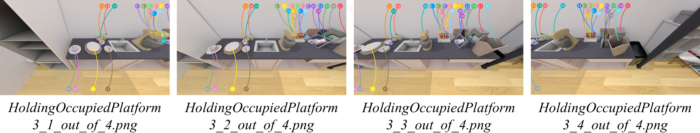
You are currently at object_kitchen_counter_1_body_platform_1.
And you are holding kitchenware_small_white_mug.
Steps used: 3/20. You can only take at most 20 steps, so hurry if you've almost used all of them!
Your available action space:
Here are 4 images, named ['HoldingOccupiedPlatform3_1_out_of_4.png', 'HoldingOccupiedPlatform3_2_out_of_4.png', 'HoldingOccupiedPlatform3_3_out_of_4.png', 'HoldingOccupiedPlatform3_4_out_of_4.png'] respectively.
Their description is as follows: These image show the platform you are currently on in one view, with regions or objects marked with numbers for you to place objects accurately. The platform is object_kitchen_counter_1_body_platform_1.
If the platform has no objects, a 3x3 grid will be marked on the platform to help you place objects, with each grid marked in numbers from 1 to 9. If there are objects on the platform, guiding lines will indicate the object numbers. Note that if you see multiple images, it means the platform is too long to be captured in one image, and it's guaranteed that the same object will marked in THE SAME COLOR GUIDELINES AND THE SAME NUMBER. If you think you can't determine the number of an item in one picture, you can go through other pictures and see if this item is marked more clearly.
VLM Response: place_r
The object has been placed successfully. You can now call end if you think you've finished the task correctly, or can also pick up the object again if you think the placement is not correct.
You are currently at object_kitchen_counter_1_body_platform_1.
And you are holding nothing.
Steps used: 4/20. You can only take at most 20 steps, so hurry if you've almost used all of them!
Your available action space:
Here are 4 images, named ['Idle_4_1_out_of_4.png', 'Idle_4_2_out_of_4.png', 'Idle_4_3_out_of_4.png', 'Idle_4_4_out_of_4.png'] respectively.
Their description is as follows: These images show the platform you are currently on in one view, with regions or objects marked with numbers for you to place objects accurately. The platform is object_kitchen_counter_1_body_platform_1.
If the platform has no objects, a 3x3 grid will be marked on the platform to help you place objects, with each grid marked in numbers from 1 to 9. If there are objects on the platform, guiding lines will indicate the object numbers. Note that if you see multiple images, it means the platform is too long to be captured in one image, and it's guaranteed that the same object will marked in THE SAME COLOR GUIDELINES AND THE SAME NUMBER. If you think you can't determine the number of an item in one picture, you can go through other pictures and see if this item is marked more clearly.
VLM Response: pick_object_17_of_current_platform
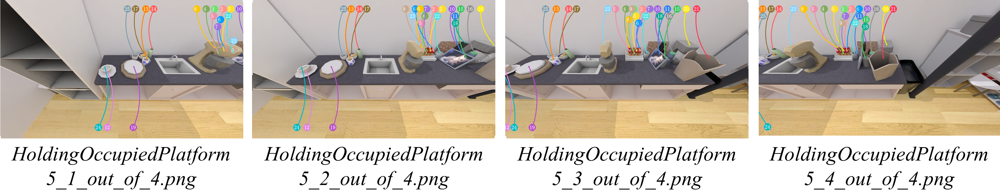
You are currently at object_kitchen_counter_1_body_platform_1.
And you are holding kitchenware_small_white_bowl.
Steps used: 5/20. You can only take at most 20 steps, so hurry if you've almost used all of them!
Your available action space:
Here are 4 images, named ['HoldingOccupiedPlatform5_1_out_of_4.png', 'HoldingOccupiedPlatform5_2_out_of_4.png', 'HoldingOccupiedPlatform5_3_out_of_4.png', 'HoldingOccupiedPlatform5_4_out_of_4.png'] respectively.
Their description is as follows: These image show the platform you are currently on in one view, with regions or objects marked with numbers for you to place objects accurately. The platform is object_kitchen_counter_1_body_platform_1.
If the platform has no objects, a 3x3 grid will be marked on the platform to help you place objects, with each grid marked in numbers from 1 to 9. If there are objects on the platform, guiding lines will indicate the object numbers. Note that if you see multiple images, it means the platform is too long to be captured in one image, and it's guaranteed that the same object will marked in THE SAME COLOR GUIDELINES AND THE SAME NUMBER. If you think you can't determine the number of an item in one picture, you can go through other pictures and see if this item is marked more clearly.
VLM Response: place_r
The object has been placed successfully. You can now call end if you think you've finished the task correctly, or can also pick up the object again if you think the placement is not correct.
You are currently at object_kitchen_counter_1_body_platform_1.
And you are holding nothing.
Steps used: 6/20. You can only take at most 20 steps, so hurry if you've almost used all of them!
Your available action space:
Here are 4 images, named ['Idle_6_1_out_of_4.png', 'Idle_6_2_out_of_4.png', 'Idle_6_3_out_of_4.png', 'Idle_6_4_out_of_4.png'] respectively.
Their description is as follows: These images show the platform you are currently on in one view, with regions or objects marked with numbers for you to place objects accurately. The platform is object_kitchen_counter_1_body_platform_1.
If the platform has no objects, a 3x3 grid will be marked on the platform to help you place objects, with each grid marked in numbers from 1 to 9. If there are objects on the platform, guiding lines will indicate the object numbers. Note that if you see multiple images, it means the platform is too long to be captured in one image, and it's guaranteed that the same object will marked in THE SAME COLOR GUIDELINES AND THE SAME NUMBER. If you think you can't determine the number of an item in one picture, you can go through other pictures and see if this item is marked more clearly.
VLM Response: pick_object_7_of_current_platform
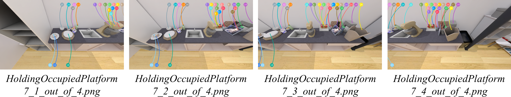
You are currently at object_kitchen_counter_1_body_platform_1.
And you are holding kitchenware_spice_container.
Steps used: 7/20. You can only take at most 20 steps, so hurry if you've almost used all of them!
Your available action space:
VLM Response: place_r
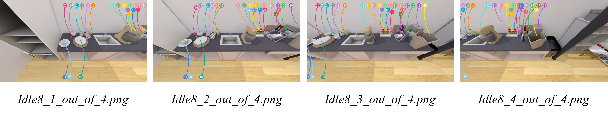
The object has been placed successfully. You can now call end if you think you've finished the task correctly, or can also pick up the object again if you think the placement is not correct.
You are currently at object_kitchen_counter_1_body_platform_1.
And you are holding nothing.
Steps used: 8/20. You can only take at most 20 steps, so hurry if you've almost used all of them!
Your available action space:
Here are 4 images, named ['Idle_8_1_out_of_4.png', 'Idle_8_2_out_of_4.png', 'Idle_8_3_out_of_4.png', 'Idle_8_4_out_of_4.png'] respectively.
Their description is as follows: These images show the platform you are currently on in one view, with regions or objects marked with numbers for you to place objects accurately. The platform is object_kitchen_counter_1_body_platform_1.
If the platform has no objects, a 3x3 grid will be marked on the platform to help you place objects, with each grid marked in numbers from 1 to 9. If there are objects on the platform, guiding lines will indicate the object numbers. Note that if you see multiple images, it means the platform is too long to be captured in one image, and it's guaranteed that the same object will marked in THE SAME COLOR GUIDELINES AND THE SAME NUMBER. If you think you can't determine the number of an item in one picture, you can go through other pictures and see if this item is marked more clearly.
VLM Response: pick_object_1_of_current_platform
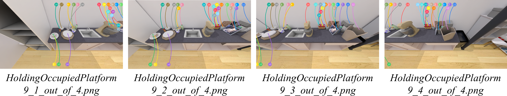
You are currently at object_kitchen_counter_1_body_platform_1.
And you are holding kitchenware_white_paper_towel_holder.
Steps used: 9/20. You can only take at most 20 steps, so hurry if you've almost used all of them!
Your available action space:
Here are 4 images, named ['HoldingOccupiedPlatform9_1_out_of_4.png', 'HoldingOccupiedPlatform9_2_out_of_4.png', 'HoldingOccupiedPlatform9_3_out_of_4.png', 'HoldingOccupiedPlatform9_4_out_of_4.png'] respectively.
Their description is as follows: These image show the platform you are currently on in one view, with regions or objects marked with numbers for you to place objects accurately. The platform is object_kitchen_counter_1_body_platform_1.
If the platform has no objects, a 3x3 grid will be marked on the platform to help you place objects, with each grid marked in numbers from 1 to 9. If there are objects on the platform, guiding lines will indicate the object numbers. Note that if you see multiple images, it means the platform is too long to be captured in one image, and it's guaranteed that the same object will marked in THE SAME COLOR GUIDELINES AND THE SAME NUMBER. If you think you can't determine the number of an item in one picture, you can go through other pictures and see if this item is marked more clearly.
VLM Response: go_to_object_table_02_40_platform_2
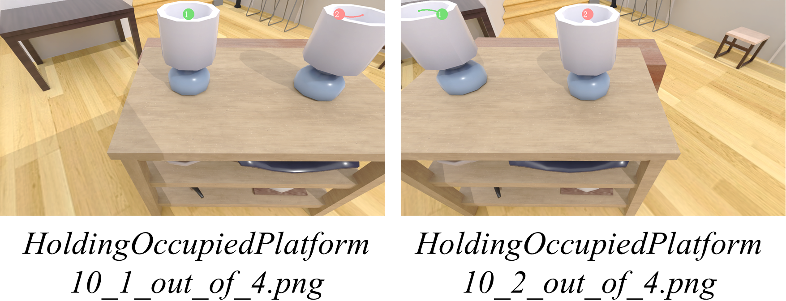
You are currently at object_table_02_40_platform_2.
And you are holding kitchenware_white_paper_towel_holder.
Steps used: 10/20. You can only take at most 20 steps, so hurry if you've almost used all of them!
Your available action space:
Here are 2 images, named ['HoldingOccupiedPlatform10_1_out_of_2.png', 'HoldingOccupiedPlatform10_2_out_of_2.png'] respectively.
Their description are as follows: These image show the platform you are currently on in one view, with regions or objects marked with numbers for you to place objects accurately. The platform is object_table_02_40_platform_2.
If the platform has no objects, a 3x3 grid will be marked on the platform to help you place objects, with each grid marked in numbers from 1 to 9. If there are objects on the platform, guiding lines will indicate the object numbers. Note that if you see multiple images, it means the platform is too long to be captured in one image, and it's guaranteed that the same object will marked in THE SAME COLOR GUIDELINES AND THE SAME NUMBER. If you think you can't determine the number of an item in one picture, you can go through other pictures and see if this item is marked more clearly.
VLM Response: show_receptacle_of_object_1_of_current_platform
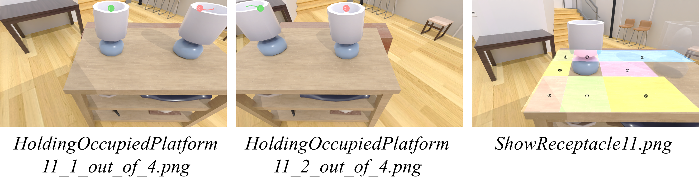
Here are 1 images, named ['ShowReceptacle_11.png'] respectively.
Their description is as follows: This image shows the available receptacles around object 1 on the platform, you see this because you've taken "show_receptacle" action previously. The numbers from 1 to 8 indicate the available receptacles. Not all numbers from 1 to 8 may be present, as some receptacles might be too small or blocked. To use the numbers shown in the image to specify where you want to place the object you are holding, you can include (1, {receptacles_idx} (receptacles_idx in [1, 8]) in the output action.
You are currently at object_table_02_40_platform_2.
And you are holding kitchenware_white_paper_towel_holder.
Steps used: 11/20. You can only take at most 20 steps, so hurry if you've almost used all of them!
Here are 2 images, named ['HoldingOccupiedPlatform11_1_out_of_2.png', 'HoldingOccupiedPlatform11_2_out_of_2.png'] respectively.
Their description are as follows: These images show the platform you are currently on in one view, with regions or objects marked with numbers for you to place objects accurately. The platform is object_table_02_40_platform_2.
If the platform has no objects, a 3x3 grid will be marked on the platform to help you place objects, with each grid marked in numbers from 1 to 9. If there are objects on the platform, guiding lines will indicate the object numbers. Note that if you see multiple images, it means the platform is too long to be captured in one image, and it's guaranteed that the same object will marked in THE SAME COLOR GUIDELINES AND THE SAME NUMBER. If you think you can't determine the number of an item in one picture, you can go through other pictures and see if this item is marked more clearly.
VLM Response: show_receptacle_of_object_2_of_current_platform
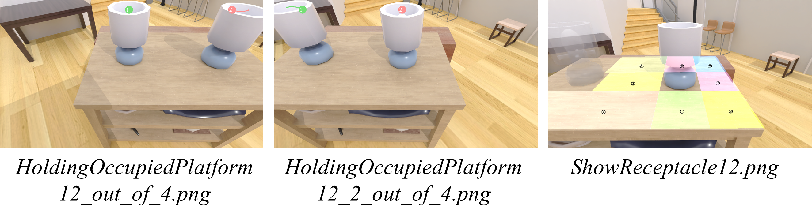
Here are 1 images, named ['ShowReceptacle_12.png'] respectively.
Their description is as follows: This image shows the available receptacles around object 1 on the platform, you see this because you've taken "show_receptacle" action previously. The numbers from 1 to 8 indicate the available receptacles. Not all numbers from 1 to 8 may be present, as some receptacles might be too small or blocked. To use the numbers shown in the image to specify where you want to place the object you are holding, you can include (1, {receptacles_idx} (receptacles_idx in [1, 8]) in the output action.
You are currently at object_table_02_40_platform_2.
And you are holding kitchenware_white_paper_towel_holder.
Steps used: 12/20. You can only take at most 20 steps, so hurry if you've almost used all of them!
Here are 2 images, named ['HoldingOccupiedPlatform12_1_out_of_2.png', 'HoldingOccupiedPlatform12_2_out_of_2.png'] respectively.
Their description are as follows: These images show the platform you are currently on in one view, with regions or objects marked with numbers for you to place objects accurately. The platform is object_table_02_40_platform_2.
If the platform has no objects, a 3x3 grid will be marked on the platform to help you place objects, with each grid marked in numbers from 1 to 9. If there are objects on the platform, guiding lines will indicate the object numbers. Note that if you see multiple images, it means the platform is too long to be captured in one image, and it's guaranteed that the same object will marked in THE SAME COLOR GUIDELINES AND THE SAME NUMBER. If you think you can't determine the number of an item in one picture, you can go through other pictures and see if this item is marked more clearly.
VLM Response: place_s_[(1,7),(1,8),(2,3),(2,4)]
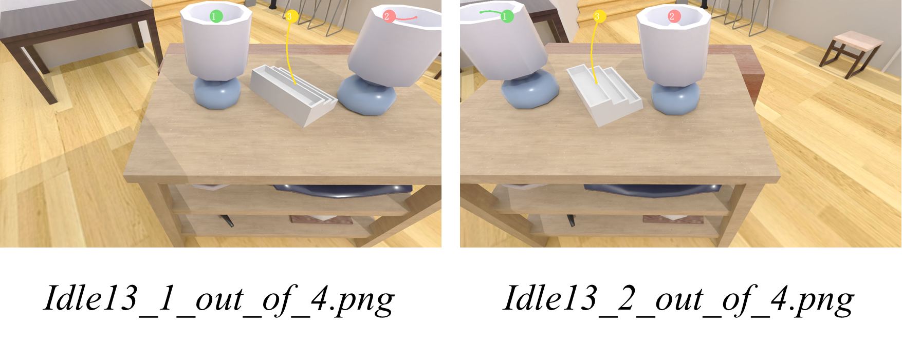
The object has been placed successfully. You can now call end if you think you've finished the task correctly, or can also pick up the object again if you think the placement is not correct.
You are currently at object_table_02_40_platform_2.
And you are holding nothing.
Steps used: 13/20. You can only take at most 20 steps, so hurry if you've almost used all of them!
Your available action space:
Here are 2 images, named ['Idle_13_1_out_of_2.png', 'Idle_13_2_out_of_2.png'] respectively.
Their description is as follows: These image show the platform you are currently on in one view, with regions or objects marked with numbers for you to place objects accurately. The platform is object_table_02_40_platform_2.
If the platform has no objects, a 3x3 grid will be marked on the platform to help you place objects, with each grid marked in numbers from 1 to 9. If there are objects on the platform, guiding lines will indicate the object numbers. Note that if you see multiple images, it means the platform is too long to be captured in one image, and it's guaranteed that the same object will marked in THE SAME COLOR GUIDELINES AND THE SAME NUMBER. If you think you can't determine the number of an item in one picture, you can go through other pictures and see if this item is marked more clearly.
VLM Response: CALL_END
(call_ended)
Task result: Target object placed between two objects.
Task status: Success
You are a household assistant robot equipped with a vision system and manipulation capabilities. You need to complete a task in a 3D environment, mainly involving moving, picking up, and placing objects. Your goal is to move an object from one place to another correctly according to instructions. Please strictly follow the given Action Space for operations.
At the beginning of each task, you will be informed of a specific task to complete. Throughout the task execution, you will transition between multiple states and have access to a set of possible actions (action space).
You may receive one of the following task types involving one object and another object or a platform. ({an object/another object/a platform} are the name of objects or platforms, {dir} is one of the 8 directions):
Understanding directions:
Directions like 'front', 'rear', 'left', and 'right' are defined relative to the robot's perspective and the heading of the object or platform you are interacting with. The heading of a ground object is not fixed and depends on where the robot is standing and facing.
Empty Surfaces (Platforms): When interacting with an empty platform, imagine it divided into a 3x3 grid. The direction aligned with the heading (also, the FARTHEST middle space to you, NOT THE NEAREST MIDDLE SPACE) is labeled "front," with the remaining regions proceeding counterclockwise as "front-left," "left," "rear-left," "rear," "rear-right," "right," and "front-right." The grid is conceptually numbered as follows, based on these directions:
[front-left, front, front-right],
[left, center, right],
[rear-left, rear, rear-right]
Occupied Surfaces (Objects on Platforms): For objects on platforms, imagine extending the edges of the object's bounding box to the platform's boundaries. The resulting regions define the object's 8 receptacles, and the direction is defined similarly.
Current task:
Move Remote to Bowl's rear-left receptacles
Initially, Remote is on object_hemnes_day_bed_platform_5, and Bowl is on object_dining_table_mella_platform_0.
Steps used: 0/20. You can only take at most 20 steps, so hurry if you've almost used all of them!
Your available action space:
VLM Response: go_to_object_hemnes_day_bed_platform_5

You are currently at object_hemnes_day_bed_platform_5.
And you are holding nothing.
Steps used: 1/20. You can only take at most 20 steps, so hurry if you've almost used all of them!
Your available action space:
Here are 3 images, named ['Idle_1_1_out_of_3.png', 'Idle_1_2_out_of_3.png', 'Idle_1_3_out_of_3.png'] respectively.
Their description is as follows: These images show the platform you are currently on in one view, with regions or objects marked with numbers for you to place objects accurately. The platform is object_hemnes_day_bed_platform_5.
VLM Response: pick_object_5_of_current_platform

You are currently at object_hemnes_day_bed_platform_5.
And you are holding Remote.
Steps used: 2/20. You can only take at most 20 steps, so hurry if you've almost used all of them!
Here are 3 images, named ['HoldingOccupiedPlatformState_2_1_out_of_3.png', 'HoldingOccupiedPlatformState_2_2_out_of_3.png', 'HoldingOccupiedPlatformState_2_3_out_of_3.png'] respectively.
Their description is as follows: This image shows the platform you are currently on in one view, with regions or objects marked with numbers for you to place objects accurately. The platform is object_hemnes_day_bed_platform_5.
VLM Response: go_to_object_dining_table_mella_platform_0

You are currently at object_dining_table_mella_platform_0.
And you are holding Remote.
Steps used: 3/20. You can only take at most 20 steps, so hurry if you've almost used all of them!
Your available action space:
Here are 2 images, named ['HoldingOccupiedPlatform_3_1_out_of_2.png', 'HoldingOccupiedPlatform_3_2_out_of_2.png'] respectively.
Their description is as follows: This image shows the platform you are currently on in one view, with regions or objects marked with numbers for you to place objects accurately. The platform is object_dining_table_mella_platform_0.
VLM Response: show_receptacle_of_object_5_of_current_platform

Here are 1 images, named ['ShowReceptacle_4.png'] respectively.
Their description is as follows: This image shows the available receptacles around object 3 on the platform, you see this because you've taken "show_receptacles" action previously. The numbers from 1 to 8 indicate the available receptacles. Not all numbers from 1 to 8 may be present, as some receptacles might be too small or blocked. To use the numbers shown in the image to specify where you want to place the object you are holding, you can include (3, {receptacles_idx} (receptacles_idx in [1, 8]) in the output action.
You are currently at object_dining_table_mella_platform_0.
And you are holding Remote.
Steps used: 4/20. You can only take at most 20 steps, so hurry if you've almost used all of them!
Here are 2 images, named ['HoldingOccupiedPlatform4_1_out_of_2.png', 'HoldingOccupiedPlatform4_2_out_of_2.png'] respectively.
Their description is as follows: This image shows the platform you are currently on in one view, with regions or objects marked with numbers for you to place objects accurately. The platform is object_dining_table_mella_platform_0.
VLM Response: place_s_[(3,8)]

The object has been placed successfully. You can now call end if you think you've finished the task correctly, or can also pick up the object again if you think the placement is not correct.
You are currently at object_dining_table_mella_platform_0.
And you are holding nothing.
Steps used: 5/20. You can only take at most 20 steps, so hurry if you've almost used all of them!
Your available action space:
Here are 2 images, named ['Idle_5_1_out_of_2.png', 'Idle_5_2_out_of_2.png'] respectively.
Their description is as follows: This image shows the platform you are currently on in one view, with regions or objects marked with numbers for you to place objects accurately. The platform is object_dining_table_mella_platform_0.
VLM Response: CALL_END
(call_ended)
Task result: Target object placed in wrong direction, expected: rear-left, found: rear-right.
Task status: Failed
Benchmarking Results
The best-performing evaluated VLM achieves 40.3% average success across the four task levels, compared with 83.3% for humans. Multi-step and outcome-based tasks remain challenging even with a grounded skill interface.
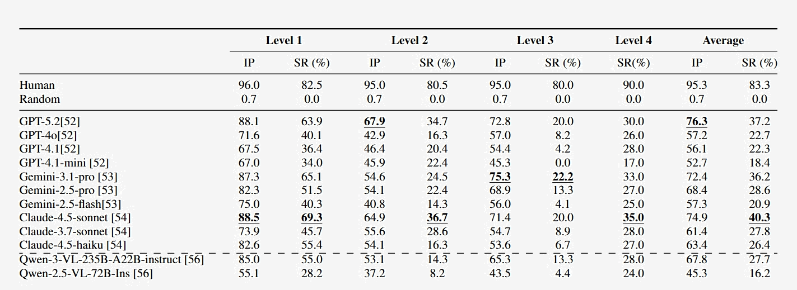
An analysis of Gemini-2.5-pro on Level-3 tasks identifies incorrect placement as the most common failure. Navigation errors also become more frequent in the second subtask, highlighting difficulties in maintaining accurate decisions over longer sequences.
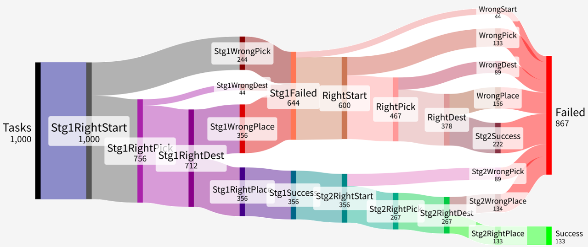
Teleoperated Real-Robot Evaluation
We apply ManiTaskGen to a reconstructed physical scene and evaluate VLM-generated high-level decisions on a mobile robot. Low-level navigation and manipulation are executed through human teleoperation.
Improving VLM Agents
Beyond benchmarking, generated tasks provide feedback for improving agent decisions. We convert task outcomes and intermediate-step evaluations into a reflection memory that guides later attempts at inference time, without updating model weights.
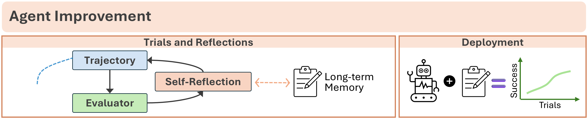
Reflection memory built from 10 trial episodes improves performance on 100 Level-1 tasks in a different scene. Gemini-2.5-flash improves from 36% to 58% success, with gains also observed for GPT-4.1 and Claude-3.5-haiku.
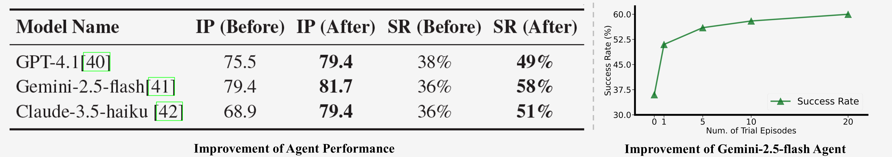
Within the tested range, additional trial episodes further improve Gemini-2.5-flash’s success rate.
Citation
@inproceedings{dai2026manitaskgen,
title = {ManiTaskGen: A Comprehensive Task Generator for Benchmarking and Improving Vision-Language Agents on Embodied Decision-Making},
author = {Dai, Liu and Wang, Haina and Wan, Weikang and Su, Hao},
booktitle = {Advances in Neural Information Processing Systems},
year = {2026},
note = {Evaluations and Datasets Track. To appear},
url = {https://arxiv.org/abs/2505.20726}
}
This website was inspired by Kevin Zakka's and Brent Yi's and Nico Bohlinger's.
Paper
Code